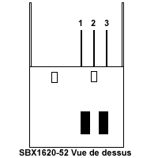
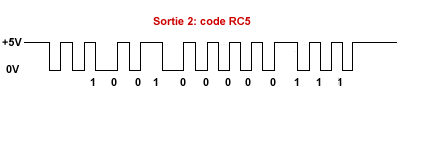
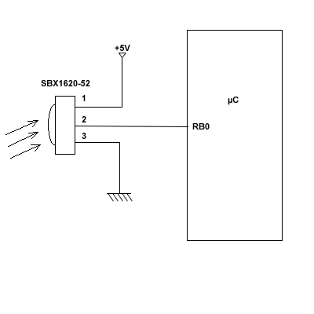

Composant
Le module de réception Infrarouge SONY
Le SBX1620-52 pour garantir le fonctionnement de vos montages récepteurs IR.[cite: 49]
I.1 Introduction et Caractéristiques
Le module de réception Infrarouge SBX 1620-52 permet un fonctionnement garanti de vos montages. Il fonctionne avec la quasi-totalité des émetteurs de télécommande infrarouge (testé avec succès avec le code RC5 de Philips).[cite: 49]
Ses caractéristiques sont les suivantes :
- Fréquence de détection : 37,9 KHz +/- 3,5 KHz.[cite: 49]
- Alimentation : 5V.[cite: 49]
- Consommation en courant : 2mA.[cite: 49]
- Distance de détection : 10m en ligne droite.[cite: 49]
- Angle d'ouverture : 40° horizontal, 25° vertical.[cite: 49]
- Impédance de sortie : 27 KOhm, sortie niveau TTL.[cite: 49]
- Plage de température : -10 / +60°C.[cite: 49]
I.2 Utilisation
Son utilisation est très simple, seules trois broches sont à connecter :
- Broche 1 : +5V[cite: 49]
- Broche 2 : Output (à connecter à une entrée du µC chargé de décoder les impulsions)[cite: 49]
- Broche 3 : Masse (boîtier à la masse)[cite: 49]



Note sur l'achat : Vous pouvez généralement le trouver chez Selectronic (réf: 22-2044) pour environ 7,47€.[cite: 49]